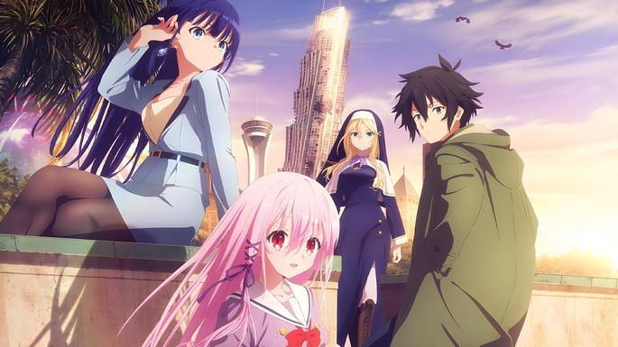

Informacion
The Rising of the Shield Hero temporada 2

Naofumi es un otaku solitario, con cero carisma y completamente ninguneado por sus compañeros, que un día se encuentra transportado a una tierra fantástica donde él es uno de los héroes elegidos... ¡El Héroe del Escudo, el arma más despreciada entre los roleros de ambos mundos! Este escudo es superversátil y cuando suma experiencia cambia de forma según las necesidades del portador, pero eso no quita que su casi nulo poder de ataque lo vuelva el hazmerreír del otro mundo.
One Piece
Monkey D. Luffy se niega a que nadie se interponga en su camino para convertirse en Rey de los Piratas. Se lanza a sucar los mares y se convertirá en un capitán dispuesto a no darse por vencido jamás hasta hacerse con el mayor tesoro de la historia: el legendario One Piece.
Skeleton Knight in Another World
Cuando Arc despierta, descubre que lo han transportado a otro mundo en el cuerpo del personaje con el que estaba jugando en un MMO. Aunque por fuera parece una armadura completa, en su interior no hay más que un esqueleto, así que es el Caballero Esqueleto. Si se descubriera su identidad lo confundirían con un monstruo ¡y le darían caza! Por esto mismo Arc decide vivir como un mercenario para no atraer miradas ajenas. Sin embargo, no es el tipo de hombre que pueda quedarse de brazos cruzados cuando ve cometerse injusticias ante sus ojos.
Spy x Family
Todo el mundo tiene una parte de sí mismos que no puede mostrar a los demás.
En una era en la que las naciones de todo el mundo se encuentran involucradas en una feroz guerra de información a puerta cerrada, Ostania y
Westalis llevan décadas en guerra fría.
La División de Inteligencia de Westalis (WISE) envía a su mejor espía, "Twilight", en una misión ultrasecreta para vigilar los movimientos de
Donovan Desmond, quien dirige el Partido Nacional por la Unidad de Ostania, responsable de bombardear los esfuerzos de paz entre ambos países.
Kaguya-Sama: Love is War

Kaguya es hija de una familia muy importante y millonaria. Shirogane es también hijo de buena familia y presidente del consejo. Ambos son admirados por todos en la Academia Shuchiin, y ambos están enamorados el uno del otro, pero no se rebajarán a admitirlo y ambos intentan que sea el otro el que declare primero su amor.
The Greatest Demon Lord is Reborn as a Typical Nobody
El más poderoso Señor Demonio de la historia, Varvatos, sentía que ya había conseguido todo lo que podía como rey. Debido a lo poderoso que era, se había quedado completamente solo y anhelaba una vida más sencilla. Unos milenios más tarde renace como Ard Meteor, un simple aldeano, pero en este futuro en el que ha renacido la civilización mágica ha sufrido un gran declive y la magia ha perdido su poder de antaño. Arc se une a la Academia de Magia con su amiga de la infancia Ireena, y por mucho que lo intenta, no logra no destacar y hacer notar que no es un cualquiera.
The Dawn of the Witch

Ambientada en el mismo mundo de Zero kara Hajimeru Mahō no Sho, la guerra que se libró entre la Iglesia y las Brujas durante cinco siglos finalmente terminó en paz. Sin embargo, enclavado en los lugares sombríos del mundo, las brasas de ese antiguo conflicto aún arden. Un estudiante problemático llamado Sable, que asiste a la Real Academia de Magia del Reino de Wenias, no tiene recuerdos de su época antes de inscribirse. A las órdenes del director Albus, dejó el Reino para viajar a los confines del sur del continente, donde los insurgentes anti-magia siguen siendo una fuerza a tener en cuenta, como parte de un régimen de entrenamiento especial. Lo acompaña un grupo de individuos fuertes tanto en capacidad como en personalidad; está la conocida como la Bruja del Alba, Roux Cristasse, que busca el conocimiento prohibido de la magia primitiva en el “Grimorio de Zero”, la chica genio Holtz, así como la única bestia de la escuela, Kudd. ¿Qué verdad descubrirán en su viaje hacia el sur…?
A couple of Cukoos
Nagi Umino es un estudiante de preparatoria al que intercambiaron con el hijo de otra familia cuando nació, pero ahora por fin va a conocer a sus padres biológicos. El día que va a concerlos se encuentra con Erika Amano, estudiante en una preparatoria femenina para señoritas de buena familia. A petición de la chica, Nagi se ve medio forzado a fingir ser su novio para evitar un matrimonio concertado... Sin embargo, lo que no sabían es que además de ser falsos prometidos, ¡son los bebés a los que intercambiaron al nacer!
Extreame Hearts
Hiyori se mudó a Tokio para debutar como cantante, pero no ha conseguido el éxito que esperaba. Un día, su productora le sugiere que pruebe suerte en los hiperdeportes, donde también participan idols.
Engage Kiss
Baylong City es una isla artificial en el Océano Pacífico, para explotar los recursos naturales de la zona. Shū es el dueño de una pequeña compañía en la ciudad, pero sus malos hábitos hace que esté constantemente sin dinero.
Lycoris Recoil

Una cafetería que sirve un café delicioso, dulces riquísimos y... ¿¡más!? Desde hacer entregas hasta hacer de cuidadoras, ya sea luchando contra zombis o incluso... ¿un monstruo gigante? ¡No dudes en pasarte! ¡Sea lo que sea que pidas dejánoslo a nosotras!
Musasi-no
Informacion y trailer no disponibles actulmente fuera de japon
Shoot! Goal to the Future
Atsushi Kamiya es el Ex capitán del Instituto Kakegawa y conocido mundialmente como el «capitán valiente» a través de un famoso equipo de fútbol italiano. Hideto Tsuji es un estudiante del instituto Kakegawa que parece desinteresado en el ahora debilitado equipo de fútbol… El encuentro de ambos será el comienzo de una nueva leyenda.
Detective Conan
Shinichi Kudo es hijo de un famoso escritor de novelas de misterio, pero él también tiene sus propias habilidades de genio, y es que pese a ser un adolescente, es un gran detective que ayuda a la policía a resolver muchos casos. Sus grandes capacidades de deducción le ayudan a resolver los más complicados casos criminales, pero cuando se cruza en el camino de cierta organización, le administran una droga experimental que lo convierte en un niño, así que no tiene más remedio que adoptar una nueva identidad e intentar encontrar a los responsables para volver a la normalidad.
Mushoku Tensei Jobless Reincarnation
Cuando un autobús atropella a un joven de 34 años que no ha logrado mucho en su vida, su historia no termina ahí. Habiendo reencarnado en un niño, Rudy aprovechará cada oportunidad para vivir la vida que siempre quiso. ¡Con la ayuda de sus amigos, unas habilidades mágicas recién adquiridas, y el coraje para hacer las cosas que siempre ha soñado, se embarca en una aventura épica, con su experiencia pasada intacta!
KONOSUBA -God's blessing on this wonderful world!
Kazuma Satou es un chico de preparatoria otaku y hikikomori que no suele salir de casa, pero cuando lo hace, un fatídico (y ridículo) accidente acaba con su vida. En el otro mundo aparece una diosa ante él y le propone comenzar de nuevo su vida en un mundo de magia y espada, pero las condiciones son un tanto peculiares, así que acabará comenzando de cero como aventurero y acompañado de una diosa.
DARLING in the FRANXX
En un futuro distante la humanidad ha creado Plantation, una ciudad fortaleza móvil construida sobre las ruinas del mundo y en la que ha florecido la civilización. En la ciudad hay barracones especiales para pilotos llamados Mistilteinn, aunque popularmente se los conoce como "jaulas de pájaros". Allí es donde viven estos chicos... sin saber nada del mundo exterior, sin poder sentir nunca el enorme cielo. Su única misión en la vida siempre fue luchar.
My Dress-Up Darling
Gojo Wakana es un estudiante de preparatoria que quiere convertirse en un maestro del tradicional arte de crear muñecas Hina. Aunque adora ese arte, no sabe nada de las últimas tendencias y eso hace que le cueste encajar con sus compañeros de clase. Los más populares de la clase, en especial una chica llamada Marin Kitagawa, parecen creer que él vive en un mundo aparte. Todo esto cambia por completo un día cuando Marin comparte un secreto inesperado con él y hace que sus dos mundos coincidan.
Naruto Shippuden

Naruto quiere ser el mejor ninja en la tierra. La acción comienza tras los dos años y medio que el protagonista, Naruto Uzumaki, ha pasado entrenando con su maestro Jiraiya. En ella reaparecen todos los personajes de la serie anterior pero con más experiencia y fuerza. Además, la Organización Akatsuki entra en acción, tras su breve aparición en la parte anterior, y se revelan sus objetivos.
Bleach
Ichigo Kurosaki es un estudiante de instituto de 15 años, que tiene una peculiaridad: es capaz de ver, escuchar y hablar con fantasmas. Pero no sabe hasta dónde puede abarcar la clasificación de espíritus, ni lo que conlleva el saberlo. Un buen día una extraña chica, de pequeña estatura y que viste ropas negras de samurai, entra en su cuarto. Se llama Rukia Kuchiki, y es una Shinigami (Dios de la Muerte). Ante la incredulidad de Ichigo, le explica que su trabajo es mandar a las almas buenas o plus a un lugar llamado la Sociedad de Almas, y eliminar a las almas malignas o hollows.
Mob Psycho 100
Kageyama Shigeo, apodado "Mob", es un chico con problemas para expresarse pero que en realidad es un poderoso esper.
Mob está decidido a llevar una vida normal y mantiene sus poderes especiales reprimidos, pero cuando sus emociones alcancen el nivel del 100%,
¡le ocurrirá algo terrible!
Rodeado por falsos espers, espíritus malignos y misteriosas organizaciones, ¿qué hará Mob? ¿Qué elecciones tomará?
Attack on Titan Final Season
Muchos años atrás, la humanidad estuvo al borde de la extinción con la aparición de unas criaturas gigantes que devoraban a todas las personas. Huyendo, la humanidad consiguió sobrevivir en una ciudad fortificada de altas murallas que se ha convertido en el último reducto de la civilización contra los Titanes que campan a sus anchas por el mundo. Ahora esa paz está a punto de verse interrumpida por una cadena de acontecimientos que llevará a desvelar qué son los Titanes y cómo aparecieron.